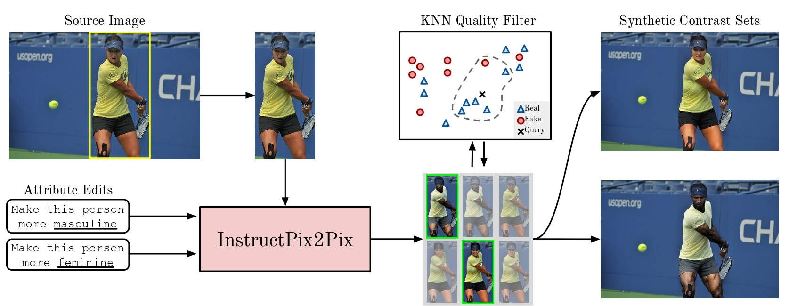

|
Miguel Farinha
Hello! I am a CS PhD student at the University of Oxford working with Professor Ronald Clark on building foundation models for 3D understanding and perception.
I obtained my masters degree at the University of Lisbon studying Applied Mathematics with a focus on Probability and Statistics and my bachelors degree at the University of Lisbon studying Biomedical Engineering.
[
Email /
Github /
Google Scholar /
LinkedIn /
CV
]
|
|
Works in Progress
|
|
Estimating Geometry and Pose for Scene Reconstruction
Unifying depth and camera motion estimation from RGB images to enable consistent 3D scene reconstruction.
[Overview]
This project develops a framework that jointly estimates scene geometry (depth)
and camera motion directly from pairs of RGB images. We combine visual
foundation models (e.g., SD3.5, DINOv2) with geometric optimization
to refine predictions into a consistent 3D representation.
Our approach performs gradient descent over a simple least-squares objective,
aligning predicted optical flow with correspondences from an off-the-shelf
flow estimator. By fine-tuning pretrained foundation models to predict
affine-invariant depth and optical flow jointly, we bridge geometry and motion
estimation in a single unified system.
Contribution: A method that integrates learning-based priors with
optimization, enabling robust 3D scene reconstruction from multiple RGB views.
|
|
|
Scene Understanding and Perception using Multi-view Diffusion Priors
Building complete 3D scene models, including geometry and material properties, from multi-view RGB images.
[Overview]
This work aims to recover a full 3D representation of indoor scenes — geometry
(depth and normals) and appearance (SVBRDF) — directly from RGB images.
We adapt the Stable Video Diffusion model to a multi-view setting,
conditioning it on several images of a scene and training it to output depth
maps, surface normals, and spatially varying reflectance properties. This
approach leverages diffusion priors for learning consistent multi-view
geometry and appearance estimation.
Contribution: A novel diffusion-based method that jointly estimates
geometry and SVBRDFs, providing a complete 3D scene model. This enables
downstream applications such as relighting, novel view synthesis, and 3D
reconstruction.
|
Past Works

|
Volumetric Cloud Field Reconstruction
Jacob Lin, Miguel Farinha, Edward Gryspeerdt, Ronald Clark
arxiv, 2023
Reconstructing cloud density and motion fields from sparse stereo pairs using deep learning.
[Overview]
Volumetric phenomena such as clouds are challenging to reconstruct because of their
translucent appearance and complex light–scattering properties. Most existing
approaches rely on controlled lab setups or expensive satellite data, which limits
real-world applicability.
We propose a novel framework that integrates a stereo depth carving module,
a 3D CNN, and an advection module. The stereo module provides
coarse volume boundaries by carving empty space from stereo depth. The 3D CNN then
predicts volumetric density fields, while the advection module leverages temporal
dynamics to estimate velocity fields and enforce temporal consistency.
Contributions:
(1) A stereo depth carving module that enables volumetric reconstruction from sparse views.
(2) An advection module that models temporal evolution, improving shape and motion
consistency.
(3) Two cloud datasets: a synthetic dataset for training and a real-world dataset for
evaluation, demonstrating accurate recovery of cloud geometry and motion from few
stereo pairs.
|
|

|
Debiasing Vision-Language Datasets with Synthetic Contrast Sets
Brandon Smith*, Miguel Farinha*,
Siobhan Mackenzie Hall, Hannah Rose Kirk, Aleksandar Shtedritski, Max Bain
NeurIPS 2023 Workshop SyntheticData4ML
Synthetic gender-balanced contrast sets for debiasing vision-language models.
[Overview]
This work aims to evaluate and improve the reliability of model bias
measurements in vision-language models (VLMs).
We argue that measurements of model bias lack validity due to dataset bias.
We demonstrate this by showing the COCO Captions dataset, the most commonly used dataset for evaluating bias,
contains spurious correlations between background context and the gender of people in-situ. To address this issue,
we propose a novel dataset debiasing pipeline to augment the COCO dataset with synthetic,
gender-balanced contrast sets, where only the gender of the subject is edited and the
background is fixed.
Contribution:
(1) We demonstrate spurious correlations in the COCO dataset between gender
and context, and show their problematic effects when used to measure model bias;
(2) We present the GENSYNTH dataset, built from a generative pipeline for synthetic image editing, and a
filtering pipeline using KNN with real and synthetic images to control for the quality of the generated
images;
(3) We benchmark CLIP models on our GENSYNTH dataset, which has no
spurious correlation, and cast doubts on the effectiveness of debiasing methods.
|
Template from Jon Barron.
|